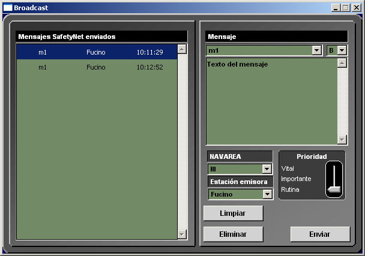
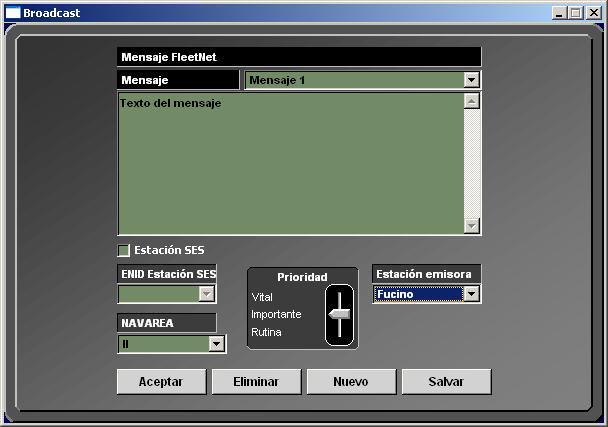

Radiodifusión EGC
El servicio EGC (Enhanced Group Call) facilita la transmisión de mensajes desde una estación costera a las estaciones de INMARSAT C. Facilita el envío de mensajes a buques particulares, grupos de buques o buques situados dentro de un área geográfica determinada. Hay dos tipos de servicios EGC:
El instructor puede solicitar la emisión de mensajes SafetyNET y FleetNET desde cualquier estación costera con capacidad de transmitir mensajes EGC que esté incluida en el ejercicio.
Envío de mensajes SafetyNET
Para la preparación de estos mensajes el instructor debe utilizar la opción Archivos → Emisor de mensajes SafetyNet del menú principal de la Pantalla de Control de Equipos. Mediante esta opción accede a la siguiente ventana:

La ventana de preparación de mensajes SafetyNET consta de dos zonas. La zona izquierda presenta la lista de mensajes enviados. La zona derecha presenta los campos necesarios para crear y enviar un nuevo mensaje.
Desde esta ventana el instructor puede realizar las siguientes acciones:
Una vez introducidos estos datos pulsar el botón Enviar si se quiere transmitir el mensaje. El sistema pedirá confirmación para transmitir el mensaje. Se presentará un aviso de error si alguno de los datos anteriormente citados no está correctamente introducido.
Envío de mensajes FleetNET
Para la preparación de estos mensajes el instructor debe utilizar la opción Archivos → Emisor de mensajes FleetNet del menú principal de la Pantalla de Control de Equipos. Mediante esta opción accede a la siguiente ventana:

Desde esta ventana el instructor puede realizar las siguientes acciones:
Una vez introducidos estos datos pulsar el botón Aceptar si se quiere transmitir el mensaje. Si se quiere preparar el mensaje para su transmisión mas adelante pulsar el botón Salvar. Se presentará un aviso de error si alguno de los datos anteriores no está correctamente introducido.